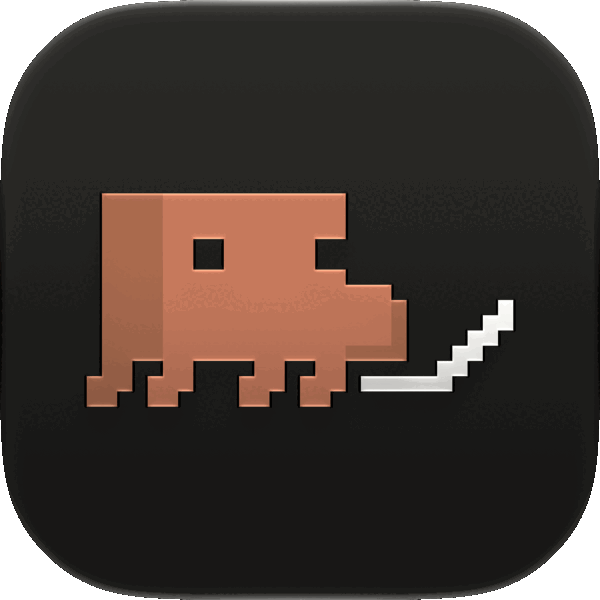
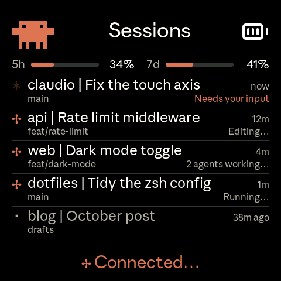
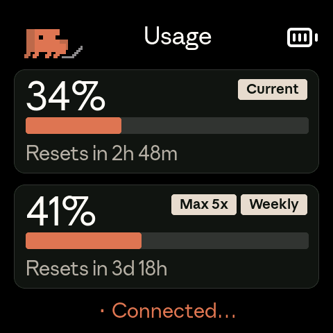
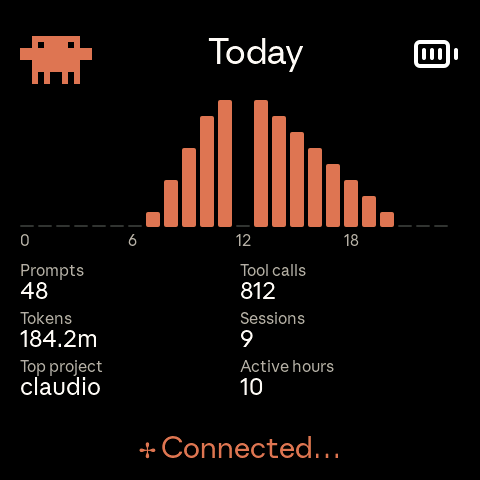
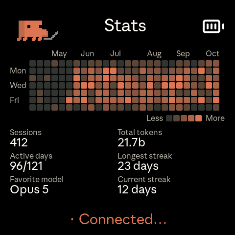
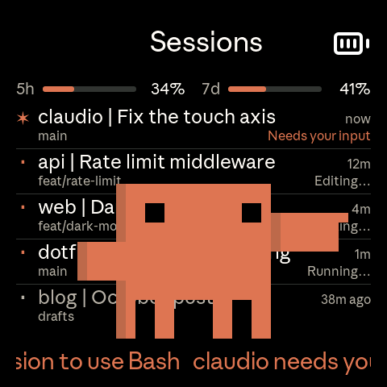
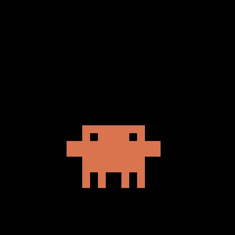
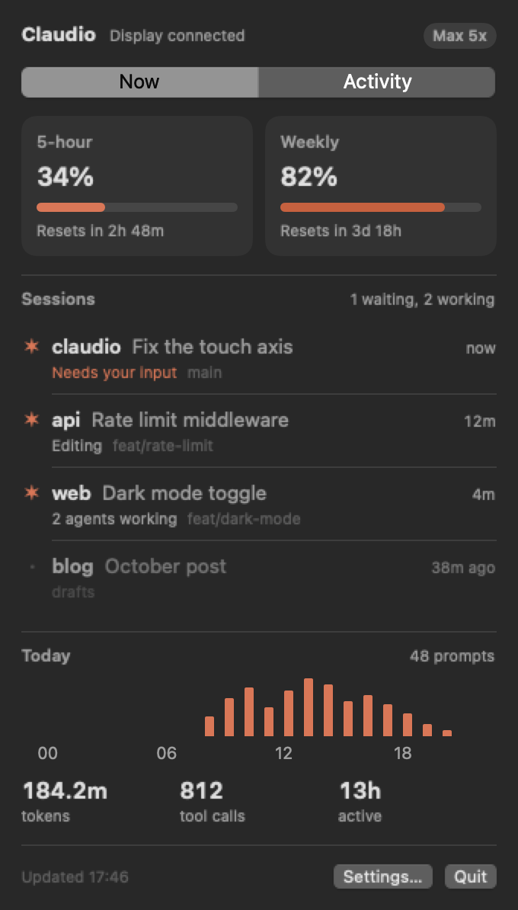
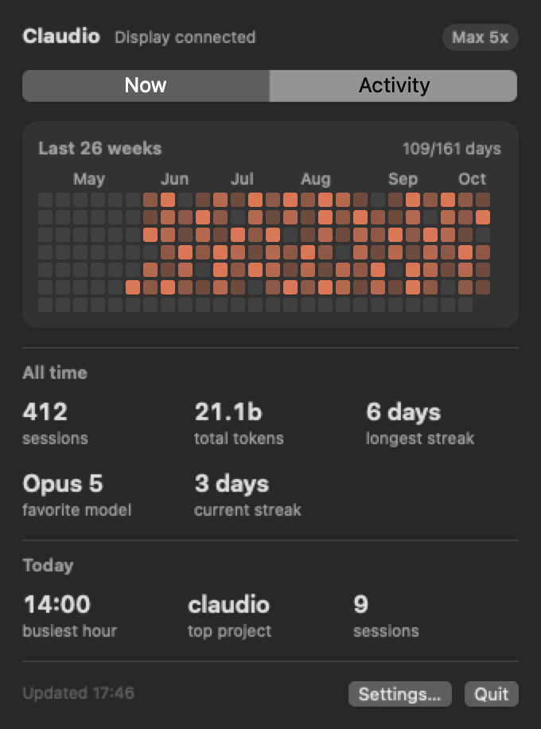
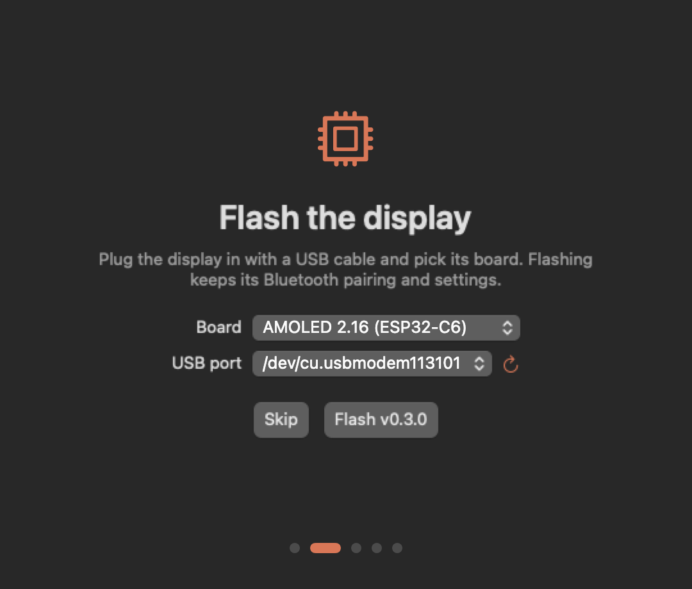

Claudio is a small AMOLED display that shows your usage limits, every open session and what each one is doing. A menu bar app on your Mac keeps it up to date.
macOS 14 or later on Apple silicon.




One row per open Claude Code session, with the project, its title, the git branch and what it's doing right now: editing, running a command, two agents working. Sessions waiting on you go on top, in orange.
Swipe or tap a button to move between workspaces. Usage shows the 5-hour and weekly limits and when each resets. Today charts your messages hour by hour. Stats keeps 26 weeks of history, the same numbers as /stats.
When Claude Code asks a question or wants a permission, Clawd walks onto the screen and points at the session, and the message scrolls along the bottom. When a long task finishes, he comes back to dance. While sessions work, the Clawd in the corner types, searches and thinks along with them.


Click Clawd in the menu bar for the same usage, sessions and today's activity, plus the full heatmap. Claudio reads the token Claude Code already keeps in your Keychain, so there's nothing to log in to.


The first time you open Claudio, it flashes the latest firmware over USB, helps you pair the display over Bluetooth and installs the Claude Code hooks that feed sessions and alerts. Flashing again later keeps your pairing and settings.

Hold the left button for push to talk. The right one sends Shift+Tab, Claude Code's mode toggle. The display pairs as a Bluetooth keyboard, so the keys go to whatever window has focus.
Claudio adds its own hooks to ~/.claude/settings.json, keeps the ones you already have and backs up the file first.
An optional beep on alerts, and a chime when the 5-hour limit resets, on boards with a speaker.
Settings checks for new firmware and flashes it over USB.
Built and tested on the Waveshare ESP32-S3 AMOLED 2.16. Six other Waveshare boards build too, though only the 2.16 is checked against the current screens.
On Linux, a small bash daemon feeds the display. On Windows, a daemon shows usage only.
Open Claudio. It flashes the display, pairs it and installs the hooks.
brew install --cask eduardoborges/tap/claudioYou need Claude Code, logged in to a paid plan.